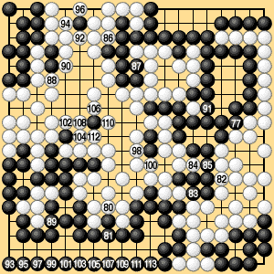

6.1 Normal Case (9)
If Black plays 277 at 'a,' White and Black can both pass, establishing the preliminary end of the game. If the game is then played out to its formal end under the rules as in Dia. 6-2-3, White wins by two points.

Dia. 6-2-3 (277 - 314)
pass: 278, 279, 313, 314